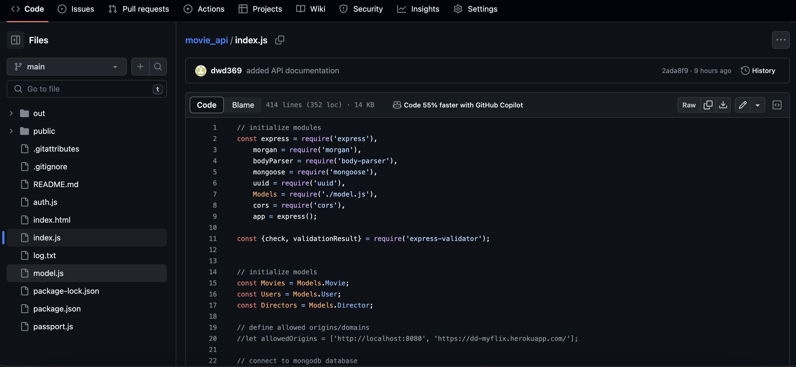
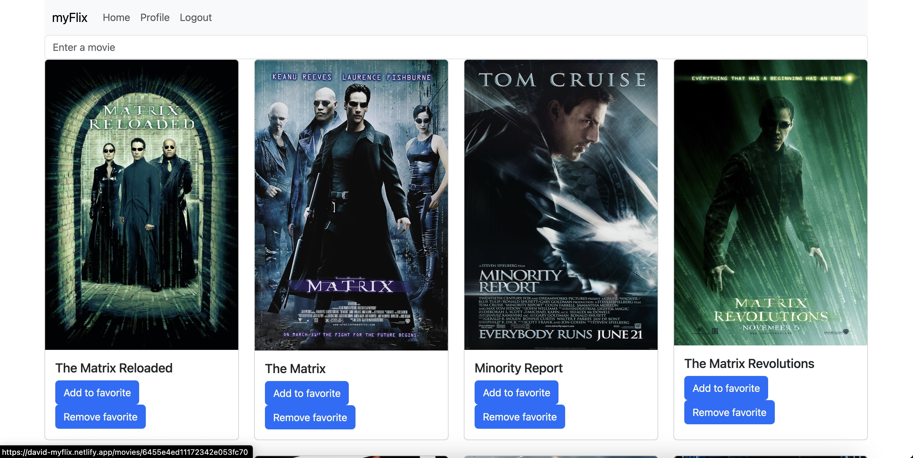
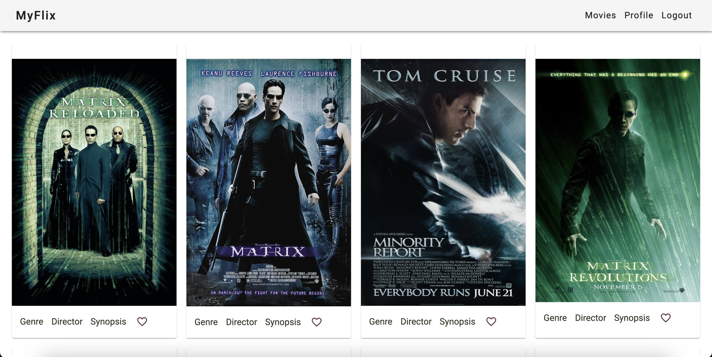
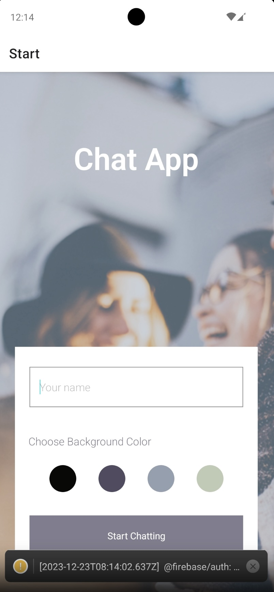

MY WORK
Movie API
Main goal of the project is to build an API service to fetch movies list and movie details, add new user, user login, and update information
Technologies Used: React, Express, JavaScript, MongoDB, Heroku, JSON Web Token
 See Project on GithubMyFlix
Main goal of the project is to build a web app similar to Rotten Tomatoes, allowing users to view details about movies.
Technologies Used: HTML, CSS, BootStrap, React, JavaScript, JSON Web Token, HTTP Request
 App Link See Project on GithubMyFlix Angular Client
App displays a welcome view as landing screen for user to sign up or login Once the user is authenticated, the user will be able to view the list of movies. Profile view is also available for user to update their information Navigation bar at the top to navigate the app
Technologies Used: HTML, CSS, JavaScript, Angular, Material Design, JSON Web Token, HTTP Request
 App Link See Project on GithubChat App
Main goal is to build a serverless, progressive web application (PWA) with React using a test-driven development (TDD) technique. The application uses the Google Calendar API to fetch upcoming events.
Technologies Used: React Native, Expo, Google Firebase, AsyncStorage (for offline usage), Gifted Chat,
 App Link See Project on GithubMeet App
Main goal is to build a serverless, progressive web application (PWA) with React using a test-driven development (TDD) technique. The application uses the Google Calendar API to fetch upcoming events.
Technologies Used: React, AWS Lambda, oAuth2, Google Calendar API
App Link See Project on Github